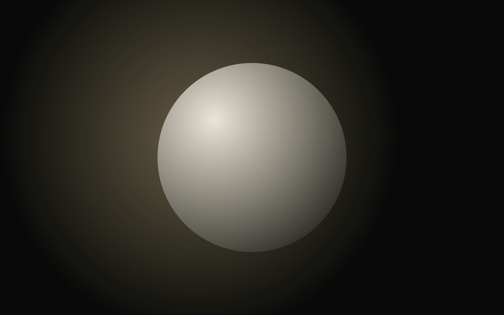

Materials
What a light is made of.
We use three materials and a fourth that cannot be held. The first three are chosen to disappear, so the last can be seen.

See what these materials make.
Explore ObjectsMaterials
We use three materials and a fourth that cannot be held. The first three are chosen to disappear, so the last can be seen.

See what these materials make.
Explore Objects